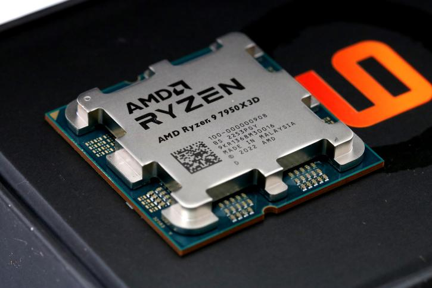
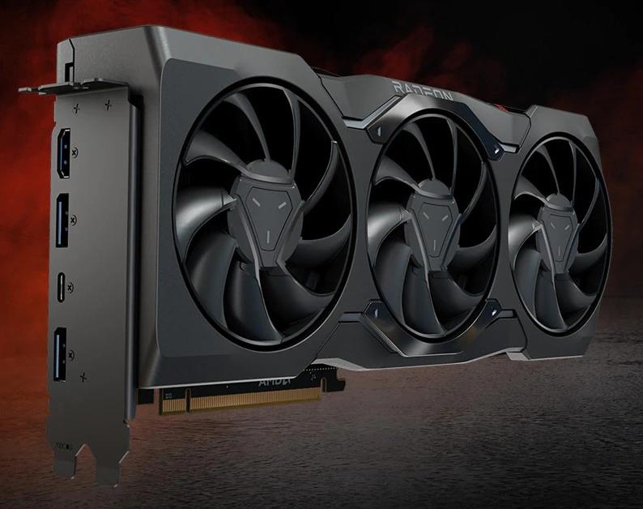

PREGUNTAS FRECUENTES


P: ¿Qué es AMD?
R: AMD es una compañía líder en tecnología que se especializa en el
diseño y fabricación de procesadores, tarjetas gráficas y otros
componentes de computadoras. Sus productos son ampliamente utilizados
en ordenadores de escritorio, portátiles y servidores.
P: ¿Cuáles son las ventajas de los procesadores AMD?
R: Los procesadores AMD ofrecen varias ventajas. Son conocidos por su
excelente relación calidad-precio, lo que significa que puedes obtener
un rendimiento comparable a un precio más asequible que otras marcas.
También son reconocidos por su eficiencia energética y por ofrecer un
rendimiento sólido en tareas multitarea y aplicaciones exigentes.
P: ¿Qué es la arquitectura Ryzen de AMD?
R: La arquitectura Ryzen es una línea de procesadores de AMD que está
diseñada para ofrecer un rendimiento excepcional en aplicaciones de
alto rendimiento, como juegos, edición de video y renderizado 3D.
Estos procesadores están construidos con múltiples núcleos y
subprocesos, lo que permite un procesamiento paralelo eficiente.
P: ¿Qué es Radeon y por qué es importante?
R: Radeon es la marca de tarjetas gráficas de AMD. Estas tarjetas son
esenciales para proporcionar un rendimiento gráfico excepcional en
juegos y aplicaciones que requieren una gran potencia de
procesamiento. Las tarjetas gráficas Radeon están diseñadas con
tecnologías avanzadas para ofrecer una experiencia de juego inmersiva
y visualmente impresionante.
P: ¿Puedo utilizar un procesador AMD en una placa base Intel?
R: No, los procesadores AMD y Intel utilizan arquitecturas y sockets
diferentes, lo que significa que no son compatibles entre sí. Si
deseas utilizar un procesador AMD, necesitarás una placa base
compatible con la arquitectura AMD correspondiente.
P: ¿Cuál es la diferencia entre los sockets AM4 y TR4?
R: Los sockets AM4 y TR4 son utilizados por AMD para diferentes líneas
de procesadores. El socket AM4 se utiliza en la mayoría de los
procesadores Ryzen de consumo general, mientras que el socket TR4 se
utiliza en la línea Threadripper de procesadores de alto rendimiento.
El socket TR4 permite la instalación de procesadores con más núcleos y
subprocesos, así como una mayor capacidad de memoria RAM.
P: ¿Cómo puedo mantener mis productos AMD actualizados?
R: Para mantener tus productos AMD actualizados, puedes visitar el
sitio web oficial de AMD y descargar los controladores más recientes
para tus componentes específicos. Los controladores actualizados
suelen incluir mejoras de rendimiento, correcciones de errores y
características adicionales.